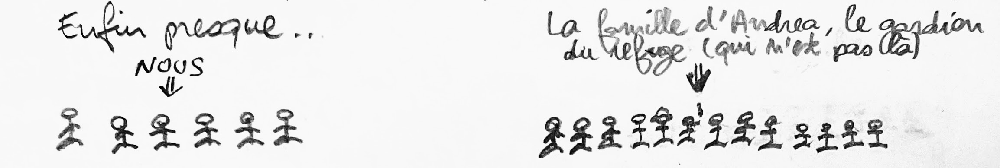
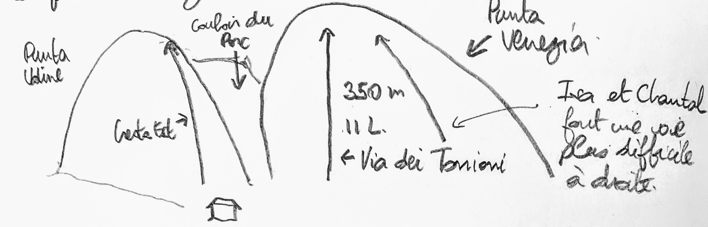
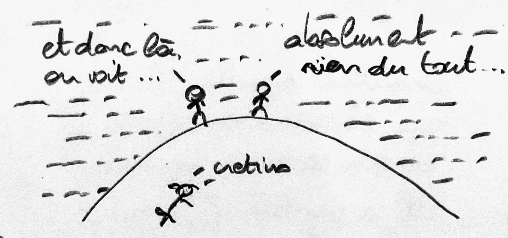

2020: Escalade au Giacoletti et dans le Queyras
En résumé
- Où: Refuge du Giacoletti (Italie) et Queyras
- Qui: Bob et Bobette, JL, Chantal, Isabelle, Axel et Manu
- Comment: voiture + refuge et camping
- Quand: du mardi 30 juin au samedi 11 juillet 2020
Programme
- Mardi : trajet Bruxelles - Mâcon
- Mercredi: Mâcon - Ristolas et montée au refuge du Viso
- Jeudi: montée au refuge du Viso
- Vendredi au Lundi: escalade au Giacoletti
- Mardi: descente et camping à Molines
- Mercredi: visite de Saint-Véran et déménagement aux Vigneaux
- Jeudi au Vendredi: escalade autour des Vigneaux
- Samedi: retour à Bruxelles
Les Tops
- L'accueil au Giacoletti
- Les grandes voies:la Cresta Est et la via dei Torrioni
- La bonne ambiance !
Les Flops
- L'escalade au Rif d'Oriol
- La navette à Saint-Véran
- Les douches au Giacoletti
Avant le départ...
Sur un coup de tête, nous décidons de partir en montagne faire de longues voies.
Nous allons au Giacoletti, un refuge situé entre le Viso et le Jervis, chaudement recommandé par Jean.
Nous serons 7: Jean-Luc, Chantal, son genou, Axel, Isa et nous deux.
On a juste perdu de vue que ça se passe en montagne et pas en Grèce au niveau de la mer...

On hésite mais Jean-Luc nous explique que c'est l'endroit le plus facile pour débuter en longues voies.
De longues voies, on en a déjà faites mais c'était au siècle passé, les cordes étaient encore en chanvre (ou presque).
Il faut faire quelques achats.
On commence par dévaliser le magasin d'Isa.
Et on complète chez Lecomte et Décathlon.
On a quelques angoisses nocturnes
Une seule solution: consulter la météo et espérer que le temps soit mauvais !
Mais les prévisions changent tout le temps. On n'a plus le choix, il va falloir s'entrainer...
et préparer les sacs.
Jour 1 (mardi 30/06): Bruxelles - Mâcon
Finalement le grand jour est arrivé.
Départ à 16:30, après le boulot de Nadine.
Repas au Bufallo Grill de Nancy (que nous retrouverons dans l'épisode suivant) et dodo à minuit à l'Ibis bidget de Mâcon. Bref c'est déjà l'aventure....
Jour 2 (mercredi 1/07): Mâcon - Ristolas + montée au refuge du Viso
Longue route pour aller à Ristolas où on gare la voiture. Par chance, Jean-Luc et Axel sont là. Un animal, enivré par 15 ans de transpiration, a dévoré le sac de Jean-Luc et il a dû aller en racheter un autre à Briançon.
Chacun a sa technique pour bien préparer son sac pour la montée.
Axel et Jean-Luc ont déjà réalisé quelques belles courses et sont beaucoup plus en forme que nous.
La pluie menace mais ne tombe pas. Les sacs sont LOURDS. On arrive enfin au Viso où on retrouve Chantale et Isa.
Le Viso est un refuge français:
Le soir, il se met à pleuvoir à torrent....
Jour 3 (jeudi 2/07): Montée au Giacoletti.
Le lendemain matin, la pluie s'est arrêtée et nous partons pour le Giacoletti. Il y a deux chemins possibles. On décide de passer par le col du couloir du Porc, plus rapide mais plus raide. On ne le sait pas encore, mais on va en bouffer du Porc pour le reste de la semaine. Au début, le porc se cache un peu.
La descente du couloir est raide mais équipée en Via Ferrata. Chacun va à son rythme..
Au bas du couloir, il y a un névé à franchir et juste pas assez de matériel...
Il y a quelques randonneurs présents quand nous arrivons mais le le soir, bonne surprise, nous sommes seuls. Enfin presque ...
Le Giacoletti est un refuge italien. L'accueil y est donc chaleureux ...
... et il y a le Wifi
Comme le refuge vient d'ouvrir, il fait très froid dans le dortoir. Heureusement on a toutes les couettes pour nous.
Après le repas, nous décidons de réviser la théorie avec les spécialistes de la question:
(j'ai vraiment écrit une procédure en 26 étapes)
Parfois ça se complique quand les spécialistes ne sont pas d'accord entre eux:
Le résultat est mitigé...
Il faudra sérieusement s'entrainer demain !
Jour 4 (vendredi 3/07): entrainement
Le matin nous sommes confinés dans le refuge pendant le petit-déjeûner car l'hélicoptère apporte les provisions de la saison.
On dirait que toute la vallée est venue pour aider au déchargement.
Le temps est sec et nous partons pour notre journée d'entrainement dans une 4b pendant que Chantal, Jean-Luc, Axel et Isa s'attaquent à la Punta Udine...
Bilan de la journée, on a grimpé maximum 60 m en 4b mais on a réussi nos rappels et on est toujours vivants !
Le soir venu, chacun vaque à ses occupations favorites.
Il se met à pleuvoir mais ce sera la dernière fois, après il fera tout le temps sec, ce qui n'est pas évident à cet endroit !
Pendant le repas 10 services, nous échangeons nos points de vue sur l'hygiène en montagne:
Et puis dodo, car demain les choses sérieuses commencent.
Jour 5 (samedi 4/07)
Aujourd'hui nous attaquons la CRETA EST !!!.
(selon le guide, c'est une voie classique de 280 m, en 12 longueurs, facile, divertissante et bien équipée mais faut-il croire tout ce qui est écrit dans les guides ? Nous en avons une vision légèrement différente ...)
Nous avons mis en place un plan d'attaque simple et efficace.
Après des heures de lutte avec la montagne hostile et les marmottes mangeuses d'homme, nous arrivons enfin au sommet !
Axel, Jean-Luc, Chanal, Isa arrivent également, légèrement moins éprouvés par leur ascension...
N'empêche, on est assez contents de notre "exploit". On a réussi notre ascension en solo, on peut maintenant mourir tranquille.
Après c'est la routine, il faut descendre par le couloir du Porc. Chacun va à son rythme ...
Le soir venu, chacun vaque à ses occupations favorites.
Pendant le repas 10 services, Jean-Luc raonte des blagues
C'est le week-end, il y a beaucoup de monde qui reste dormir. Au moins, on a chaud.
Le refuge pratique une approche pragmatique du port du masque: la semaine, le masque n'est pas nécessaire, le week-end, le masque est inutile.
Cela n'empêche pas d'être vigilant:
Jean-Luc et Axel vont reconnaitre la voie qu'on fera le lendemain. On se décide pour la via dei Torrioni qui se trouve dans la Punta Venezia.
Les cordées seront mélangées: Jean-Luc avec Nadine et Axel avec Jean-Pierre.
Jour 6 (dimanche 5/07): Via dei Torrioni
La voie est bien équipée et facile (5b max), surtout que depuis la veille nous sommes devenus des grimpeurs expérimentés.
Il y a juste 3 petits problèmes: il faut traverser un névé pour arriver à la voie...
le début de la voie est sous la neige...
et il y a un pas de 6a (5b obligé) qui donne lieu à quelques discussions avec Axel.

Finalement Axel passe le pas avec élégance

Après ce passage, nous grimpons en réversible et nous faisons la course en tête mais je commets une erreur lors du dernier relais qui nous est fatale.
A nouveau, on arrive tous en même temps et on va faire un petit tour au sommet de la Punta Venezia où se trouve un couple de grimpeurs.
Après on redescend par le couloir du Porc. La routine...
Nadine prend de l'assurance.
Le soir venu, chacun vaque à ses activités favorites et le refuge se vide pour la fin du week-end.
Pendant le repas 10 services, Axel et Isa se remémorent tous les fabuleux souvenirs des stages du CAB qu'ils ont fait ensemble.
On discute également des gardiennes de refuge.
Et Axel et Jean-Luc discutent avec Andrea pour voir s'ils peuvent faire le Viso par la voie Est. Jean-Luc hésite à partir car l'isotherme est haut et les conditions sont incertaines.
Mais Axel a un plan machiavélique pour le convaincre: avancer tant que c'est possible et puis réfléchir après
Finalement, Axel et Jean-Luc décident de partir le lendemain vers le refuge Quinto Sella, point de départ de l'arête Est et de décider sur place.
Jour 7 (lundi 6/07): Moulinettes et promenade
Aujourd'hui, chacun a son programme. Axel et jean-Luc partent au Sella. Isa et Chantal font une grande voie et nous décidons de faire quelques voies en moulinette.
Le midi, il faut se rendre à l'évidence: on n'a plus rien à manger. On décide de manger au refuge et on se régale !
On se décide enfin à aller voir le panorama juste derrière le refuge. Le problème, c'est le troupeau de bouquetins sur le chemin qui ont de grandes cornes et qui savent qu'ils sont une espèce protégée...
Finalement, on arrive au sommet mais entretemps les nuages sont arrivés et cachent entièrement la vallée du Pô...
Au retour, notre attention est attirée par des buits gutturaux en provenance de la Punta Udine. On ne voit pas Chantal en train de négocier un pas difficile mais on l'entend très bien...
Le soir, Isa nous parle de ses hobbys de jeunesse.
Un gentil membre de l'office de tourisme de Molines-en-Queyras vient nous faire la promotion de la région.
Chantal appelle Manu qui est dans la région et qui va nous rejoindre. Manu n'est pas particulièrement enthousiaste à l'idée d'aller à Molines.
Finalement on décide de ne pas écouter Manu et de tout de même aller à Molines. On doit juste décider du chemin pour redescendre à Ristolas.
A l'unanimité, nous décidons de passer par le tunnel de la Traversette.
Pas de nouvelles de Jean-Luc et Axel qui doivent être arrivés au Sella.
Jour 8 (mardi 7/07): Descente et camping à Molines
C'est le moment du départ. On est tristes de quitter cet endroit fabuleux mais un peu contents d'aller vers plus de comfort.
On refait les sacs.
On prépare les comptes.

On se dit au revoir.
La descente se passe sans problèmes et sous le soleil.
Petit passage par Abriès pour profiter de la civilisation qui nous a tant manqué (bières, chips, magasins de vêtements) et puis on va s'installer dans le camping de Molines.
Le soir, Nadine reçoit un SMS étrange d'Axel avec des petits chiens et chats. On n'arrive pas à le joindre et on en réduit à faire des hypothèses...
Jour 9 (mercredi 8/07): Visite de Saint-Véran et déménagement au camping des Vigneaux
La nuit a été fraiche, plus qu'au Giacoletti !
Journée de repos aujourd'hui. On visite Saint-Véran et on en profite pour se renseigner sur la navette qui doit nous emener au site de grimpe.
On décide de plier bagages et d'aller aux Vigneaux.
On a finalement des nouvelles de Jean-Luc et Axel qui ont réussi l'arête Est du Viso. Ils nous rejoignent plus tôt que prévu au camping de Molines.
On arrive dans l'après-midi aux Vigneaux où Manu travaille d'arrache-pied pour nous trouver l'emplacement idéal.
Nouveau déménagement au camping Les Vaudois. Après plusieurs missions d'exploration, nous trouvons enfin l'emplacement qui convient, libre jusque dimanche. Sauf que....
Jour 10 (jeudi 9/07): Escalade à Mont-Dauphin
Journée relax, on va grimper à Mont-Dauphin. C'est bien mais on a un peu la nostalgie du Giacoletti ...
L'après-midi, il fait super chaud, on va se baigner. Nous ne sommes pas les seuls à avoir eu cette idée.
Après cela, on va manger une petite glace, enfin ça dépend pour qui...
Le soir on mange au camping, on se croirait presque au Giacoletti !.
Jour 11 (vendredi 10/07): Escalade au Rif d'Oriol
Dernier jour des vacances pour nous. Les autres continuent. On décide d'aller grimper au Rif d'oriol.
Gros point positif: ça se passe dans des gorges, c'est donc bien à l'ombre.
Sinon c'est plutôt pour les spécialistes, on fait un tache...
Après quelques voies, l'enthousiasme faiblit et on décide d'aller visiter Besançon. Il fait vraiment très chaud
Le soir il pleut toujours, ce qui nous oblige à faire appel au plan B. On se met tous dans la tente festival de Manu.
Jour 12 (samedi 11/07): Retour à Bruxelles
Voici venu le jour du départ. La première partie des vacances se termine,nous rentrons à Bruxelles pour entamer la deuxième à vélo. On ne regrette pas une minute d'être venu, nous n'avons que des bons souvenirs !
On se dit au revoir dans de grandes effusions covidiennes.